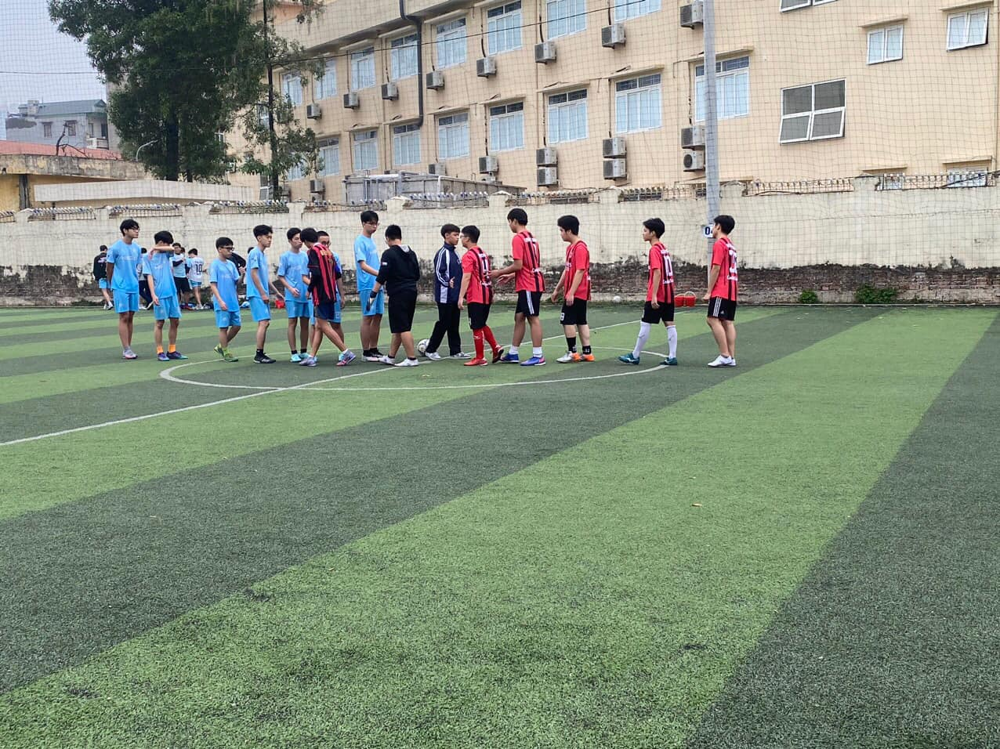

FT: FC Boé 1-1 FC Hồ Gươm
Thành Tài ⚽️
_Vòng 3 khuôn khổ HSGS Cup, được đánh giá là cửa dưới, Fc ta đã thành công cầm hoà trận thứ 3 liên tiếp và lần này là một đối thủ rất mạnh đã có 2 chức vô địch liên tiếp

[RECAP]
_Giữa hiệp thi đấu đầu tiên, sau một loạt những pha xử lí không thực sự tốt thì FC ta đã để cho tiền đạo đối phương nâng tỉ số lên 1-0
_Bước sang hiệp đấu thứ 2, với tinh thần quả cảm, những bước chạy không biết mệt và đội hình được thay đổi, chỉ một tình huống phạt góc thôi, người đội trưởng ta đã thành công tận dụng cơ hội san bằng tỉ số cho Fc
_Cuối trận khi mà đội bạn tràn hết sang bên phần sân của ta, với những con hàng cực kì chất lượng nơi hàng phòng ngự, Fc đã hoá giải hết những đường chuyền của đội bạn và có cơ hội đối mặt thủ môn dành cho Núi nhưng Núi chưa tận dụng tốt cơ hội.
_Chung cuộc tỉ số là 1-1 và chúng ta tiếp tục có điểm trong trận đấu này, là tiền đề giúp ta có thể lách qua khe cửa hẹp và tiến sâu hơn trong giải đấu lần này.
Click để về trang trước